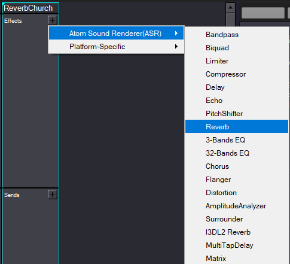
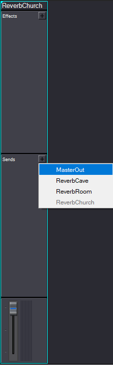
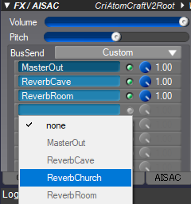

Overview
The following describes how to set up reverbs in levels using ADX2.
Refer to Audio & Reverbs* for more information on audio Environments.
Setting up Reverbs in AtomCraft
Inside AtomCraft's Project/Global tree, navigate to Global Settings → DspBusSettings → DspBusSetting_0 and create a DSP Bus with a name of your choice.
Select the created DSP Bus and add a reverb effect to its Effects section in the DSP Bus Setting Info. window by clicking the

Reverb effect

Master Out
The reverb values can then be tweaked to match your environment.
To control which Cue is affected by the reverb and to also allow fading of the reverb, a BusSend per reverb effect is required for each Cue. Therefore select the Cue, open the FX1 tab inside the FX/AISAC window, and add a BusSend as shown in the image below.

Adding a BusSend called 'ReverbChurch'
Once the DSP Bus is connected to an audio system Environment in the ACE, the reverb will automatically fade in based on the value of the EnvironmentDistance property set for the Audio Area Entity or Audio Area Ambience Entity.
When using reverbs Audio Trigger Spots, make sure to activate the Trigger Areas on Move property from the Properties panel.